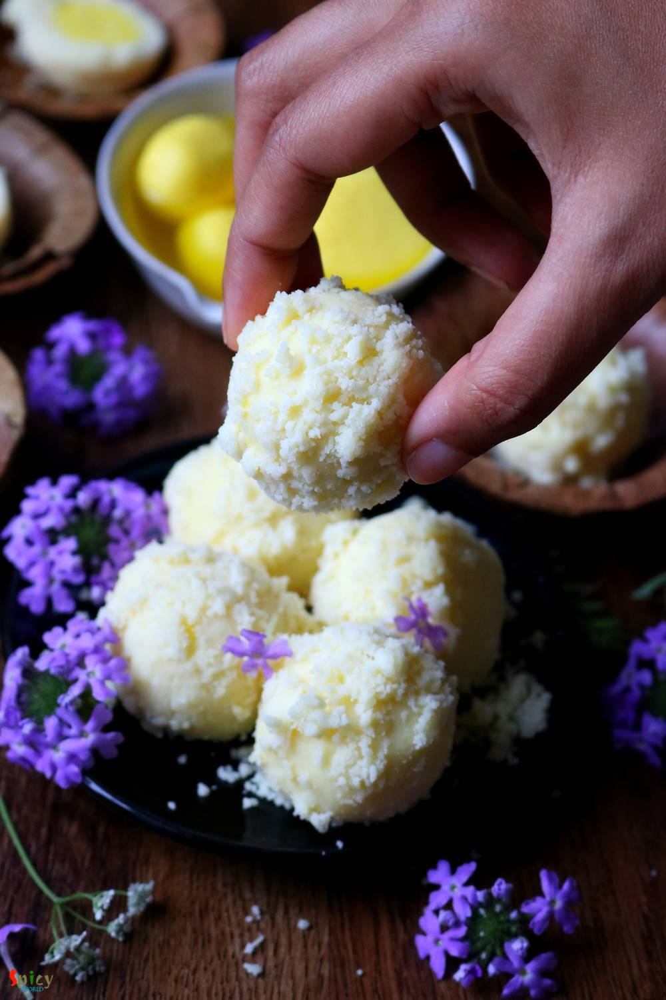
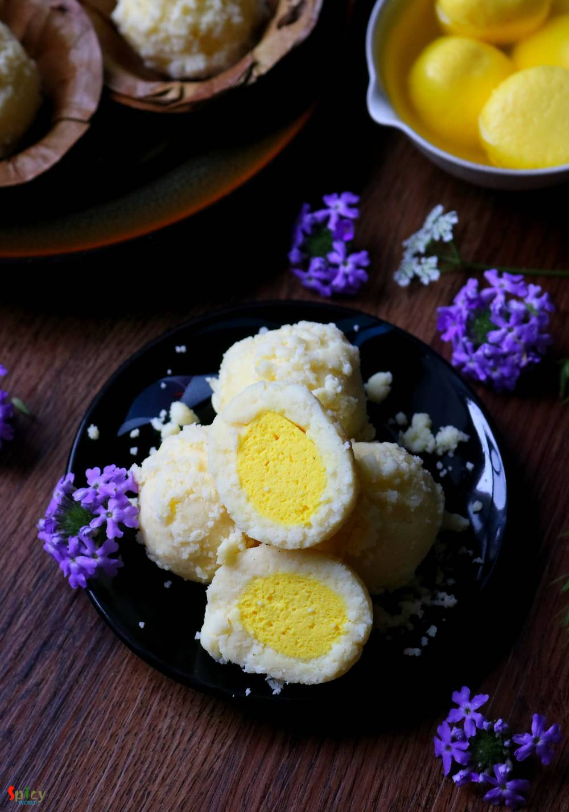

Simple and Easy Recipes
Kheer Kodom / Ras Kadam
© 2016 Spicy World, Published on: Jul 25, 2019
Kodom or Kadamba is basically the name of a flower which has a round shape and very bright yellow color. The sweet Kheer Kodom (also known as Ras Kadam) has three layers. First one is grated mawa, second one is lightly sweetened mawa and the final one is juicy roshogolla. Yes its a three layered dessert and it tastes delicious! You can make this recipe with store bought rasgulla also but I made them from scratch. Do give this unique recipe a try and let me know how in turned out for you.

Ingredients
- For Rasgulla:
- 200 grams of soft paneer or chena.
- Half Teaspoon of yellow food color.
- 2 cups of water.
- 1 cup of sugar.
- 2 green cardamom.
- Pinch of saffron.
- For Mawa:
- 2-3 Tablespoons of ghee.
- 1.5 cups of full cream milk.
- 1.5 cups of full cream milk powder.
- 2-3 Tablespoons of powder sugar.
- 2-3 Tablespoons of milk while kneading the dough.
- Some grated mawa.


Steps
Crumble the paneer with your hand. Paneer should be soft not dry.
Then add yellow food color, mix well. Mash the paneer lightly with the back of your palm for a minute.
Next cover the mashed the paneer with a wet cloth for 5 minutes.
Take very small portion and make balls out of it.
Heat water in a vessel or saucepan.
Add sugar, green cardamom and saffron. Mix well and boil for 10 minutes on medium flame.
Then add 4-5 balls at a time in boiling syrup. Do not over crowd the pan.
Cover the pan and cook on high flame for 10 minutes. Flip them with a spoon after 5 minutes.
Let the syrup cool down and keep the rasgullas in cold syrup for 2 hours.
Then in a strainer put rasgullas carefully.
Place the strainer on a bowl and keep aside for 4 hours. The bowl will catch extra syrup.
Heat ghee in a non stick pan.
Add the milk and cook for 2 minutes.
Then add milk powder, mix well and cook on medium flame until it becomes thick.
After 15 minutes the mixture will start leaving the pan. Cook 5 more minutes and the Mawa will look like a soft dough.
Turn off the flame and take the mawa out in a plate.
Let it cool down little, then add powder sugar and 2 Tablespoons of milk.
Mix well and knead well. Make a soft dough of mawa.
Then tale lemon size portion from the dough, flatten it and place one rasgulla in the center.
Cover the rasgulla carefully withthe mawa. Make a round shaped ball.
Roll the ball on a flat surface to make it smooth.
Coat the ball with some grated mawa and let them rest for 10 minutes then serve.
Your Kheer Kodom is ready to serve.
Serve this as dessert ..
")